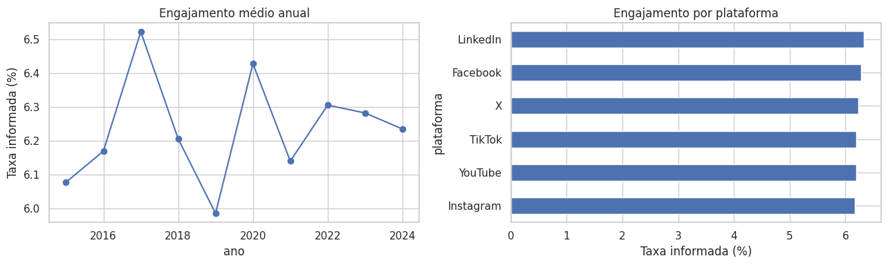

Problema e objetivos
Como plataformas, formatos, horários e perfis se relacionam ao engajamento? Este projeto organiza a base,
calcula indicadores e permite explorar resultados em um dashboard interativo.
Disciplina: Linguagem de Programação — Análise e Visualização de Dados com Python
Professor: Alexandre Neves Louzada
Aluno: Thomas Andrew de Souza Batista
Metodologia
Pandas para validação e preparação; Matplotlib e Seaborn para análise exploratória; Plotly para gráficos
interativos; Streamlit para três páginas com filtros; SQLAlchemy e SQLite para persistência.
Resultados descritivos
Engajamento médio informado: 6,24%. LinkedIn lidera com 6,32%; Lives apresentam o maior
alcance médio e 21h tem o maior engajamento médio por horário.

Resultados da simulação; não representam desempenho real nem recomendação universal de
horários.
Limitações e conclusão
Seguidores somados repetem contas, não pessoas únicas. A evolução dos seguidores é descritiva. Não há
identificação de campanhas. Correlações não demonstram causalidade. O dashboard ajuda a explorar padrões e
comparar grupos com essas limitações explícitas.